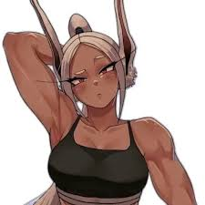

Preparo físico extremo
Antes de qualquer combate, vem a base: força de pernas, explosão muscular e resistência cardiovascular levadas ao limite todos os dias. Mirko treina o corpo para aguentar impactos que aposentariam qualquer outro herói.
- Força de pernas
- Explosão
- Cardio